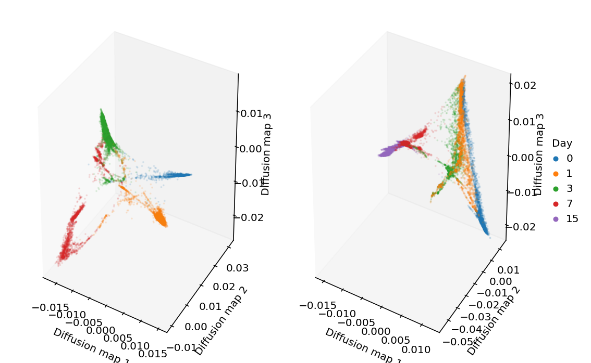
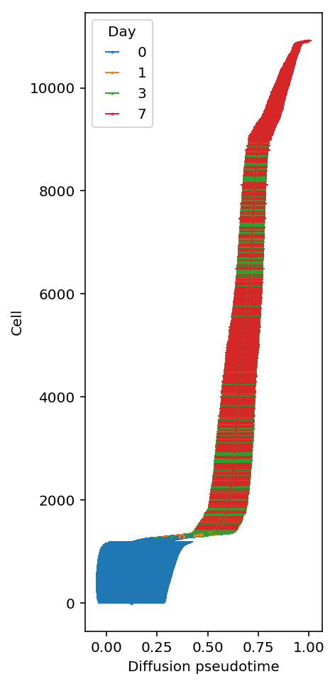

Cardiac trajectory prediction
Table of Contents
Introduction
Here, we investigate analogues of principal curves (Hastie and Stuetzle 1989) in other embeddings.
The goal is to qualitatively evaluate the ability to follow gene expression in the observed space by walking along trajectories in the embedding space, to recover key events in differentiation time courses.
Materials and methods
iPSC-derived cardiomyocyte differentiation time course data
We differentiated iPSCs into cardiomyocytes from two individuals, and performed Drop-Seq and DroNC-Seq at 4 and 5 time points respectively: 0, 1, 3, 7, and 15 days.
Read and compress the Drop-Seq data.
data = pd.read_table('/project2/onibasu/data/project_CZI/DROP_combined_counts.tsv.gz', index_col=0) counts = ss.csr_matrix(data.values) with gzip.open('/project2/mstephens/aksarkar/projects/singlecell-ideas/data/czi/drop/counts.mtx.gz', 'wb') as f: si.mmwrite(f, counts) data.index.to_series().to_csv('/project2/mstephens/aksarkar/projects/singlecell-ideas/data/czi/drop/genes.txt', index=None) pd.DataFrame(data.columns.to_series().apply(lambda x: pd.Series(x.split('_')))).to_csv('/project2/mstephens/aksarkar/projects/singlecell-ideas/data/czi/drop/cells.txt', index=None, sep=' ')
Read the compressed data.
counts = si.mmread('/project2/mstephens/aksarkar/projects/singlecell-ideas/data/czi/drop/counts.mtx.gz') genes = pd.read_table('/project2/mstephens/aksarkar/projects/singlecell-ideas/data/czi/drop/genes.txt', header=None, index_col=0) cells = pd.read_table('/project2/mstephens/aksarkar/projects/singlecell-ideas/data/czi/drop/cells.txt', sep=' ') cells.columns = ['barcode', 'day', 'ind']
Keep genes detected in at least 10% of cells.
adata = anndata.AnnData(counts.T.tocsr(), obs=cells, var=genes)
sc.pp.filter_genes(adata, min_cells=.1 * adata.shape[0])
Results
scVI
Fit scVI to the data.
X = scvi.dataset.GeneExpressionDataset( *scvi.dataset.GeneExpressionDataset.get_attributes_from_matrix( adata.X, batch_indices=np.array([i == 'rep1' for i in adata.obs['ind']]).astype(int), labels=adata.obs['day'].values, )) model = scvi.models.VAE(X.nb_genes, n_batch=X.n_batches, n_latent=10) infer = scvi.inference.UnsupervisedTrainer(model=model, gene_dataset=X) infer.train(n_epochs=200, lr=1e-2)
adata.obsm['X_scvi'] = sc.pp.neighbors(adata, use_rep='X_nmf') sc.tl.diffmap(adata)
NMF
Our benchmarking suggests NMF learns the best low rank structure of the rates.
m = skd.NMF(n_components=10, solver='mu', beta_loss=1).fit(adata.X)
loadings = m.transform(adata.X)
Remove the library size.
L = loadings / adata.X.sum(axis=1)
Look at the diffusion maps.
adata.obsm['X_nmf'] = L rep1 = adata[adata.obs['ind'] == 'Rep1'] sc.pp.neighbors(rep1, use_rep='X_nmf') sc.tl.diffmap(rep1)
rep2 = adata[adata.obs['ind'] == 'Rep2'] sc.pp.neighbors(rep2, use_rep='X_nmf') sc.tl.diffmap(rep2)
from mpl_toolkits.mplot3d import Axes3D plt.clf() plt.gcf().set_size_inches(4, 4) ax = plt.gcf().add_subplot(111, projection='3d') for i, (k, g) in enumerate(rep2.obs.groupby('day')): ax.scatter(rep2.obsm['X_diffmap'][rep2.obs['day'] == k,1], rep2.obsm['X_diffmap'][rep2.obs['day'] == k,2], rep2.obsm['X_diffmap'][rep2.obs['day'] == k,3], c=f'C{i}', s=1, alpha=.1, label=k) ax.set_xlabel('Diffusion map 1') ax.set_ylabel('Diffusion map 2') ax.set_zlabel('Diffusion map 3') leg = plt.legend(frameon=False, handletextpad=0, markerscale=4, loc='center left', bbox_to_anchor=(1, .5)) for h in leg.legendHandles: h.set_alpha(1) plt.tight_layout()

Compute diffusion psuedotime.
np.random.seed(1) dpt = [] for root in np.random.choice(rep1.obs[rep1.obs['day'] == 0].index, 200): rep1.uns['iroot'] = root sc.tl.dpt(rep1, n_dcs=15) dpt.append(rep1.obs['dpt_pseudotime']) dpt = np.array(dpt).T
Look at pseudotime vs. real time.
plt.clf() plt.gcf().set_size_inches(3, 6) for i, (k, _) in enumerate(rep1.obs.groupby('day')): plt.errorbar(x=dpt[rep1.obs['day'] == k].mean(axis=1), y=np.arange(rep1.shape[0])[rep1.obs['day'] == k], yerr=dpt[rep1.obs['day'] == k].std(axis=1), c=f'C{i}', label=k) plt.xlabel('Diffusion pseudotime') plt.ylabel('Cell') leg = plt.legend() leg.set_title('Day')

Read off gene expression over DPT trajectories.
lam = L.dot(m.components_)
plt.clf() plt.gcf().set_size_inches(3, 3) plt.scatter(dpt.mean(axis=1), lam[adata.obs['ind'] == 'Rep1',np.where(rep1.var_names == 'MYL7')[0]].A.ravel(), s=1) plt.xlabel('Diffusion pseudotime') plt.ylabel('Latent expression') plt.title('MYL7')
Text(0.5,1,'MYL7')

Investigate whether reverse pseudotime will perform better. First, see if we can confidently separate terminal cardiomyocytes.
m.components_[:,np.where(rep1.var_names == 'MYL7')[0]]
array([[ 0.0430656473], [ 3.7637520339], [ 0. ], [ 0.0259073463], [18.4579867492], [ 0. ], [ 0. ], [ 0.0441971002], [ 0. ], [ 0. ]])
Look at linear separability in the largest latent factors.
plt.clf() plt.gcf().set_size_inches(3, 3) plt.semilogx() plt.semilogy() expr = lam[adata.obs['ind'] == 'Rep1',np.where(rep1.var_names == 'MYL7')[0]].A.ravel() plt.scatter(L[adata.obs['ind'] == 'Rep1',0].A, L[adata.obs['ind'] == 'Rep1',4].A, s=1, c=colorcet.cm['fire'](expr / expr.max())) plt.xlabel('Factor 1') plt.ylabel('Factor 5')
Text(0,0.5,'Factor 5')

Look at factor 5 vs. DPT.
plt.clf() plt.gcf().set_size_inches(3, 3) plt.scatter(dpt.mean(axis=1), L[adata.obs['ind'] == 'Rep1',4].A, s=1) plt.xlabel('Diffusion pseudotime') plt.ylabel('Loading on factor 5')
Text(0,0.5,'Loading on factor 5')
Geodesics
Estimate the geodesic in this space (https://www.springer.com/us/book/9780817634902, https://arxiv.org/pdf/1411.7432 https://arxiv.org/abs/1710.11379).
metric = m.components_.dot(m.components_.T)
import scipy.integrate def f(x, y): return np.vstack((y[], -.5 * np.linalg.pinv(metric), np.kron(y[1], y[1]))) def bc(ya, yb): return np.array([ya - loadings[start][0], yb - loadings[end][0]]) x = np.linspace(0, 1, 5) res = scipy.integrate.solve_bvp(f, bc, x, np.zeros((20, x.size)))
0 - f554087f-b03a-4574-8613-072c205e5251